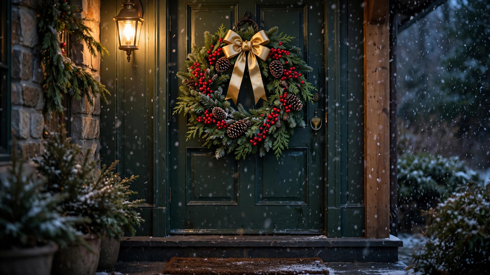

Christmas Wreath Ideas 2026: DIY and Store-Bought

A wreath on the door is Christmas's handshake — the first hello of the season. Whether you craft your own or buy one ready to hang, the right wreath sets the tone for your whole home. These Christmas wreath ideas for 2026 cover DIY tutorials for every skill level and the best store-bought styles, from classic evergreen to modern minimalist.
Classic Evergreen Wreaths
You cannot go wrong with fresh fir, pine and cedar. A 24-inch wreath suits most doors; go 30 inches for double doors or grand entries. Add pinecones, red berries and a simple bow. Mist fresh wreaths every few days and they will stay beautiful through New Year.
DIY Wreath Tutorials
Grapevine base + faux sprigs: hot-glue greenery, berries and ornaments in clusters — under an hour. Ornament wreath: glue shiny baubles to a foam ring for full glam. Dried floral wreath: eucalyptus, wheat and dried oranges for a modern organic look that lasts for years.
Scale check: hold the wreath up to your door before buying or making. A wreath that looks generous in the store often looks timid on a real door — when in doubt, go bigger.
Modern and Minimalist Styles
2026 loves restraint: a simple eucalyptus hoop wreath, an asymmetric half-wreath with a single cluster of greenery, or a bare grapevine wreath with one oversized velvet bow. These suit modern homes and look effortlessly chic.
Where to Hang Beyond the Door
Wreaths shine on windows (hang with ribbon from the top sash), above mantels, on pantry doors, and even as table centerpieces with a pillar candle in the middle. A small wreath on each dining chair back is a charming dinner-party touch.
For double doors, hang two smaller matching wreaths instead of one large one. Symmetry on double doors looks intentional and grand.
Shop: Wreaths & Door Decor
Ready-to-hang wreaths, DIY bases and festive door accents.

Prices shown at the time of publishing and can change.
Frequently Asked Questions
How do I keep a fresh wreath from drying out?
Choose fresh-cut, mist every 2 to 3 days, keep out of direct sun and wind, and avoid hanging between a storm door and sun-baked entry.
What size wreath for a standard front door?
A 24-inch wreath is the sweet spot for most single doors. Measure your door width and choose a wreath about two-thirds of it.
Can I make a wreath without a hot glue gun?
Yes — use floral wire and a grapevine or wire frame. Wire everything in clusters; it is actually sturdier than glue for outdoor wreaths.
How long do artificial wreaths last?
A quality faux wreath lasts 5+ years. Fluff it each season, store it in a wreath bag, and refresh the bow annually.
Conclusion
Whether handmade or store-bought, your wreath is the welcome mat of the holidays. Hang it with pride, and let every visitor feel the warmth before they even knock.